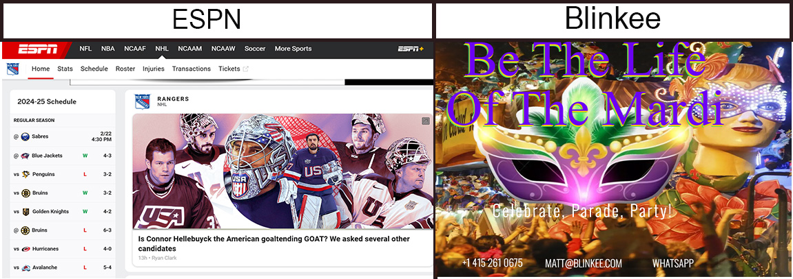

Blinkee While I like the colors on this webpage. There is a lot going on. For example "Be The Life of the Mardi" on the home webpage is glowing with high intensity, The back ground with all the light of the parade and the flashy color of the text cancel each other out making it very difficult to read. Also it isn't just the color. The picking of the font also makes it hard to read with the color choices. Some of the colors are not very complementary with one another.
The very bright look to this web site is a very good example "to much of a good thing" What the webpage could have done is not add so much different glowing colors and made a somewhat simple page or what they could have done is find color with better harmony. So the combination of colors lets the eye travel smoothly between them with no sharp contrasts catching the eye.
A good example is ESPN there is not to much happening on this webpage and the colors are complementary with one another. which is making it easy to read. The white background and black text making it easy for most people to read.
Disclosure: This is not a real website.